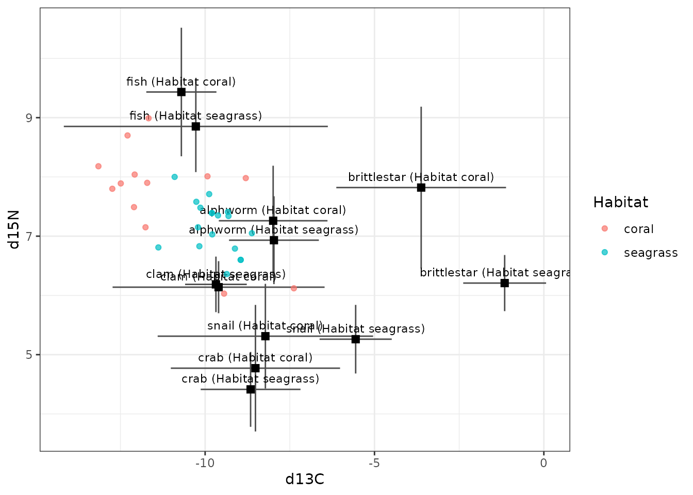
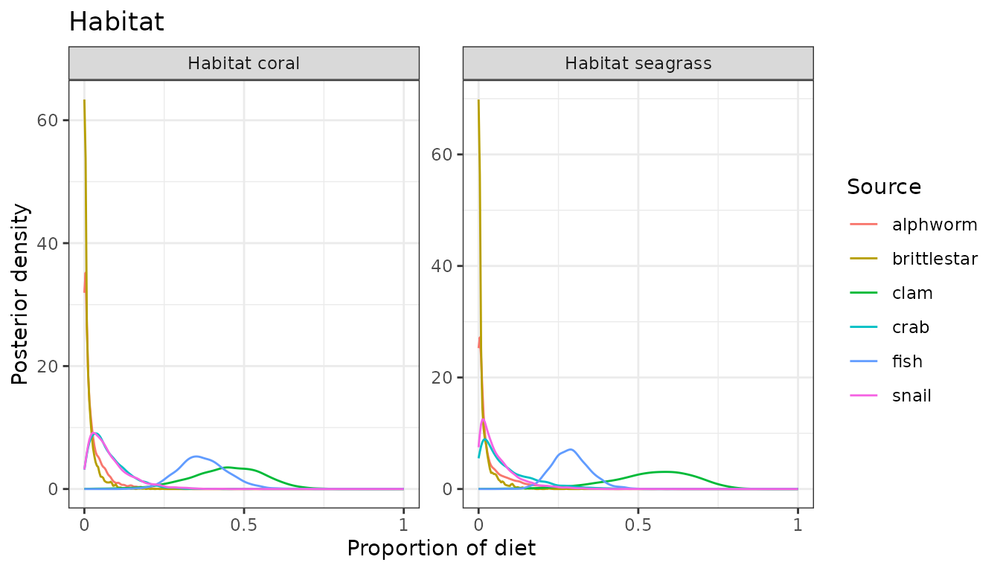
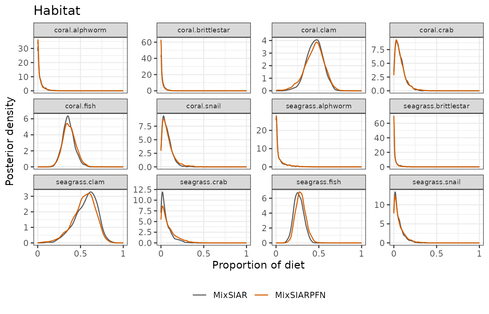
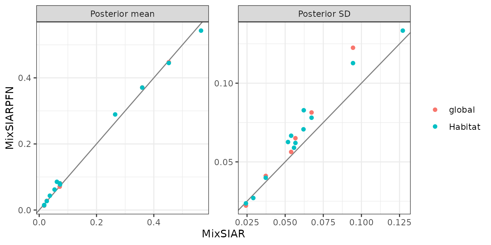

Mantis shrimp: sources by habitat, concentrations and an informative prior
Source:vignettes/mantis.Rmd
mantis.RmdThis follows MixSIAR’s mantis shrimp example script
(mixsiar_script_mantis.R): mantis shrimp from several
habitats, two tracers (δ¹³C and δ¹⁵N) and six prey sources. It uses
three options together: habitat is a fixed effect, the sources were
measured separately in each habitat
(source_factors = "Habitat"), and the sources’ elemental
concentrations differ (concentration dependence). MixSIAR’s script also
uses an informative “specialist” prior, which MixSIARPFN supports too.
Only the fitting call differs from MixSIAR’s script:
run_pfn() in place of write_JAGS_model() and
run_model().
The data
mix <- load_mix_data(
filename = system.file("extdata", "mantis_consumer.csv", package = "MixSIARPFN"),
iso_names = c("d13C", "d15N"), factors = "Habitat", fac_random = FALSE,
fac_nested = FALSE, cont_effects = NULL)
source <- load_source_data(
filename = system.file("extdata", "mantis_source.csv", package = "MixSIARPFN"),
source_factors = "Habitat", conc_dep = TRUE, data_type = "means", mix)
discr <- load_discr_data(
filename = system.file("extdata", "mantis_discrimination.csv", package = "MixSIARPFN"),
mix)There are 31 mantis shrimp in 2 habitats (coral, seagrass), and 6 sources (alphworm, brittlestar, clam, crab, fish, snail).
plot_data(mix = mix, source = source, discr = discr)
Fitting the model
Residual * Process error, and MixSIAR’s specialist prior: weights 1,
1, 4, 4, 1, 4 on the sources (in source$source_names
order), scaled so that they sum to the number of sources, exactly as in
MixSIAR’s script.
alpha.spec <- c(1, 1, 4, 4, 1, 4)
alpha.spec <- alpha.spec * length(alpha.spec) / sum(alpha.spec)
setNames(round(alpha.spec, 2), source$source_names)
#> alphworm brittlestar clam crab fish snail
#> 0.4 0.4 1.6 1.6 0.4 1.6
time <- system.time(
fit <- run_pfn(mix, source, discr, alpha.prior = alpha.spec,
resid_err = TRUE, process_err = TRUE)
)
fit
#> MixSIARPFN fit (Residual * Process error), 6 sources, in 0.4 s
#> Marginal posteriors (no joint draws). Global diet:
#> source mean sd 2.5% 97.5%
#> alphworm 0.028 0.041 0.000 0.143
#> brittlestar 0.013 0.022 0.000 0.075
#> clam 0.447 0.123 0.176 0.660
#> crab 0.081 0.065 0.006 0.249
#> fish 0.371 0.081 0.223 0.543
#> snail 0.071 0.056 0.005 0.215
#> Use output_pfn() for every proportion and parameter.
#> Note: Consumer columns not used: Season.Results
out <- output_pfn(fit, mix, source,
output_options = list(summary_save = FALSE, plot_post_save_pdf = FALSE))
knitr::kable(round(summary_table(fit), 3))| Mean | SD | 2.5% | 5% | 25% | 50% | 75% | 95% | 97.5% | |
|---|---|---|---|---|---|---|---|---|---|
| Epsilon.1 | 0.907 | 0.542 | 0.272 | 0.328 | 0.558 | 0.794 | 1.123 | 1.842 | 2.178 |
| Epsilon.2 | 2.579 | 1.095 | 1.079 | 1.231 | 1.820 | 2.378 | 3.110 | 4.585 | 5.219 |
| p.global.alphworm | 0.028 | 0.041 | 0.000 | 0.000 | 0.002 | 0.012 | 0.037 | 0.109 | 0.143 |
| p.global.brittlestar | 0.013 | 0.022 | 0.000 | 0.000 | 0.001 | 0.005 | 0.017 | 0.056 | 0.075 |
| p.global.clam | 0.447 | 0.123 | 0.176 | 0.227 | 0.372 | 0.458 | 0.533 | 0.631 | 0.660 |
| p.global.crab | 0.081 | 0.065 | 0.006 | 0.010 | 0.033 | 0.064 | 0.110 | 0.208 | 0.249 |
| p.global.fish | 0.371 | 0.081 | 0.223 | 0.245 | 0.316 | 0.366 | 0.422 | 0.511 | 0.543 |
| p.global.snail | 0.071 | 0.056 | 0.005 | 0.009 | 0.029 | 0.057 | 0.097 | 0.181 | 0.215 |
| p.coral.alphworm | 0.027 | 0.040 | 0.000 | 0.000 | 0.002 | 0.011 | 0.036 | 0.107 | 0.139 |
| p.coral.brittlestar | 0.014 | 0.024 | 0.000 | 0.000 | 0.001 | 0.005 | 0.018 | 0.059 | 0.080 |
| p.coral.clam | 0.445 | 0.113 | 0.196 | 0.246 | 0.377 | 0.454 | 0.523 | 0.615 | 0.644 |
| p.coral.crab | 0.077 | 0.062 | 0.006 | 0.009 | 0.032 | 0.062 | 0.106 | 0.198 | 0.237 |
| p.coral.fish | 0.371 | 0.078 | 0.228 | 0.250 | 0.318 | 0.366 | 0.419 | 0.504 | 0.535 |
| p.coral.snail | 0.081 | 0.067 | 0.006 | 0.010 | 0.033 | 0.063 | 0.110 | 0.212 | 0.256 |
| p.seagrass.alphworm | 0.043 | 0.071 | 0.000 | 0.000 | 0.002 | 0.012 | 0.053 | 0.196 | 0.254 |
| p.seagrass.brittlestar | 0.015 | 0.027 | 0.000 | 0.000 | 0.001 | 0.004 | 0.017 | 0.069 | 0.094 |
| p.seagrass.clam | 0.543 | 0.133 | 0.236 | 0.297 | 0.465 | 0.560 | 0.638 | 0.731 | 0.759 |
| p.seagrass.crab | 0.085 | 0.083 | 0.002 | 0.004 | 0.023 | 0.059 | 0.123 | 0.256 | 0.305 |
| p.seagrass.fish | 0.289 | 0.059 | 0.183 | 0.199 | 0.249 | 0.286 | 0.326 | 0.391 | 0.414 |
| p.seagrass.snail | 0.062 | 0.063 | 0.002 | 0.003 | 0.017 | 0.041 | 0.087 | 0.190 | 0.230 |

MixSIAR’s script goes on to combine sources after the fit
(hard-shelled against soft-bodied prey), with
combine_sources(). That needs joint posterior draws, which
MixSIARPFN does not give, so it is not repeated here.
Comparison with MixSIAR
ref <- mixsiar_reference("mantis")
ref_raw <- NULL # means source data: no raw-data fit
blocks <- "Habitat"MixSIAR 3.1.12 fitted the same model to the same data with 3 chains of 300,000 iterations (burn-in 200,000, MixSIAR’s “long” run), which took 35 minutes (largest Gelman-Rubin diagnostic 1.044). MixSIARPFN took 0.4 seconds, about 5,800 times faster.
Means, SDs, 95% intervals and the Wasserstein-1 distance between the two posteriors (W1: how far, on average, one posterior’s mass has to move to match the other, on the proportion scale):
knitr::kable(data.frame(
quantity = cmp$name,
`MixSIARPFN mean` = round(cmp$pfn_mean, 3), `MixSIAR mean` = round(cmp$mixsiar_mean, 3),
`MixSIARPFN SD` = round(cmp$pfn_sd, 3), `MixSIAR SD` = round(cmp$mixsiar_sd, 3),
`MixSIARPFN 95% CI` = sprintf("%.2f to %.2f", cmp$pfn_q2.5, cmp$pfn_q97.5),
`MixSIAR 95% CI` = sprintf("%.2f to %.2f", cmp$mixsiar_q2.5, cmp$mixsiar_q97.5),
W1 = round(cmp$w1, 3), check.names = FALSE))| quantity | MixSIARPFN mean | MixSIAR mean | MixSIARPFN SD | MixSIAR SD | MixSIARPFN 95% CI | MixSIAR 95% CI | W1 |
|---|---|---|---|---|---|---|---|
| Epsilon.1 | 0.907 | 0.821 | 0.542 | 0.407 | 0.27 to 2.18 | 0.30 to 1.85 | NA |
| Epsilon.2 | 2.579 | 2.671 | 1.095 | 1.085 | 1.08 to 5.22 | 1.19 to 5.30 | NA |
| p.global.alphworm | 0.028 | 0.026 | 0.041 | 0.037 | 0.00 to 0.14 | 0.00 to 0.14 | 0.001 |
| p.global.brittlestar | 0.013 | 0.017 | 0.022 | 0.024 | 0.00 to 0.07 | 0.00 to 0.09 | 0.004 |
| p.global.clam | 0.447 | 0.452 | 0.123 | 0.094 | 0.18 to 0.66 | 0.26 to 0.63 | 0.021 |
| p.global.crab | 0.081 | 0.073 | 0.065 | 0.057 | 0.01 to 0.25 | 0.01 to 0.21 | 0.008 |
| p.global.fish | 0.371 | 0.360 | 0.081 | 0.067 | 0.22 to 0.54 | 0.23 to 0.50 | 0.014 |
| p.global.snail | 0.071 | 0.072 | 0.056 | 0.054 | 0.01 to 0.21 | 0.01 to 0.20 | 0.003 |
| p.coral.alphworm | 0.027 | 0.026 | 0.040 | 0.037 | 0.00 to 0.14 | 0.00 to 0.14 | 0.001 |
| p.coral.brittlestar | 0.014 | 0.017 | 0.024 | 0.024 | 0.00 to 0.08 | 0.00 to 0.09 | 0.003 |
| p.coral.clam | 0.445 | 0.452 | 0.113 | 0.094 | 0.20 to 0.64 | 0.26 to 0.63 | 0.013 |
| p.coral.crab | 0.077 | 0.073 | 0.062 | 0.057 | 0.01 to 0.24 | 0.01 to 0.21 | 0.004 |
| p.coral.fish | 0.371 | 0.360 | 0.078 | 0.067 | 0.23 to 0.53 | 0.23 to 0.50 | 0.012 |
| p.coral.snail | 0.081 | 0.072 | 0.067 | 0.054 | 0.01 to 0.26 | 0.01 to 0.20 | 0.009 |
| p.seagrass.alphworm | 0.043 | 0.037 | 0.071 | 0.062 | 0.00 to 0.25 | 0.00 to 0.23 | 0.006 |
| p.seagrass.brittlestar | 0.015 | 0.018 | 0.027 | 0.029 | 0.00 to 0.09 | 0.00 to 0.10 | 0.003 |
| p.seagrass.clam | 0.543 | 0.565 | 0.133 | 0.127 | 0.24 to 0.76 | 0.29 to 0.77 | 0.022 |
| p.seagrass.crab | 0.085 | 0.062 | 0.083 | 0.062 | 0.00 to 0.30 | 0.00 to 0.23 | 0.024 |
| p.seagrass.fish | 0.289 | 0.265 | 0.059 | 0.056 | 0.18 to 0.41 | 0.16 to 0.38 | 0.024 |
| p.seagrass.snail | 0.062 | 0.054 | 0.063 | 0.052 | 0.00 to 0.23 | 0.00 to 0.20 | 0.008 |
for (b in blocks) print(plot_compare(fit, ref$draws, block = b))
plot_compare(fit, ref$draws, type = "means")
What this shows. MixSIARPFN’s diet proportions differ from MixSIAR’s by 0.008 on average (MixSIAR’s posterior SDs are about 0.06), the mean W1 between the two posteriors is 0.010, and the median ratio of their SDs is 1.12. The largest difference in a posterior mean is for p.seagrass.fish (0.289 against 0.265).